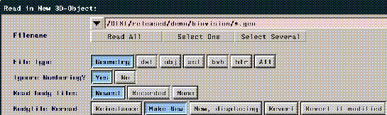
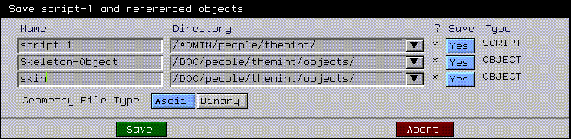

[N-World Contents] [Book Contents] [Prev] [Next] [Index]
Getting Started
In this chapter, you'll be introduced to the Skeletal Animation System. After a little instruction, you'll try your hand at animating your first skeleton!
In this Chapter
You'll learn about:
Concepts
The Skeletal Animation System was developed to simplify the animation of complex polyhedral objects. There are a variety of techniques, described below, to "attach" an object (or objects) to a skeleton.
For example, objects can be attached as enveloping skins that deform to follow the animated skeleton (for more "organic" characters), or as attached objects that do not deform, but still follow the bone to which they are attached (for more "robotic" characters).
You can create both skins and skeletons in the familiar N-Geometry environment, animate them in N-Dynamics, and, if you're developing game software, send both geometric and animation data directly to a target game system using products such as the Game Express or Game Exchange.
One of the most difficult parts in using motion capture is refining the matching of a skin to a motion capture skeleton's base state. N·World excels at this tough task because N-Geometry (our polygon modeler) makes it easy to define a correlation between a base state for the skin and a corresponding base state for the skeleton. However, defining this correlation is the most time consuming part of the job.
After you've associated a skin properly with the skeleton that will "drive" it, your motion editing should be fairly quick and simple, unlike other systems where you have to go through the matching process for every motion.
Our recommendation? Spend your time in setup and let the system do the work for you!
About Skeletons
Skeletons are a special type of object in N-Geometry, in that there are certain commands that apply only to them. However, just as with other N-Geometry objects, you can directly manipulate the object, body (skeleton), segments (bones), or points (joints).
Driving Other Polyhedra with a Skeleton
There are two basic techniques for driving polyhedra:
These two methods can be also be mixed when appropriate. For example, you may use a skin to create your basic character, then attach an object such as a hat or a sword, which does not need to deform based on changes in the skeleton's position.
Animating Single Skin Objects
One basic technique for driving creating a character is to create a skeleton, then build a "skin" that closely matches that skeleton:
Figure 1.1 Skinning a skeleton
When you use the Skeletal Animation System to attach the "skin" to the skeleton, the skin is logically divided up into skin parts; each part is associated with a given bone on the skeleton. When you animate the bone, the appropriate parts of the associated skin are updated.
Figure 1.2 Moving the bone causes the single skin to deform
Using single skins is ideal if you want realistic surface deformations, soft areas around joints like the knee or elbow (for a more natural look), or the ability to create a character out of a single object.
Animating with Attached Objects
Another technique which is commonly used in developing characters for the new generation of 3D game platforms is to use "attached objects" to simulate each "part" of a character-the head, arms, torso, and so forth are each individual objects that follow the bone to which they are attached.
Attached objects are "hard"-that is, they do not deform based on the motion of the bone, but follow it, retaining their shape. Using attached objects results in characters that have a more "robotic" feel.
You can attach objects manually (if, for example, you've already created the different parts of the model), or select the skeleton and make generate attached objects automatically:

Figure 1.3 The Make Attached Objects command attaches polyhedra to each bone
If you attach objects, you can use N-Geometry to modify those objects until your character looks just right:

Figure 1.4 You can modify the attached objects to create a unique character
Animating a character using attached objects still produce great results:
Figure 1.5 Animating the attached objects
Animating with Motion Capture Data
The Skeletal Animation System, which exists partly in N-Geometry and partly in N-Dynamics, can be used to drive skeletons using motion capture data from a variety of motion capture providers including Acclaim, BioVision, and Motion Analysis. You can also pose skeleton's using devices such as Digital Image Design's Monkey. With the Skeletal Animation System, you have several options when using motion capture data. You can:
Traditional Animating with Skeletons
In addition to using motion capture data, animators can use the various commands in the Skeletal Animation System to create a series of poses, then animate the skeleton between those poses using N-Dynamics.
Other Techniques
Other techniques for working with skeletons, skins, attached objects, motion capture, posing and many other topics are described in the following chapters and in the Skeletal Animation System Reference Guide.
The Skeletal Animation System, N-Geometry, and N-Dynamics
The Skeletal Animation System is incorporated into both N-Geometry and N-Dynamics:
Remember that division:
Using the browser with the SAS is described in the Getting Started manual.
The various examples and sample scripts in this and the following chapters should give you a better understanding of the Skeletal Animation System.
You can also refer to the N-Geometry Reference Guide, N-Geometry Tutorial, N-Dynamics Reference Guide, and N-Dynamics Tutorial for more information about those two modules.
Sample Objects and Scripts
The Skeletal Animation System Tutorial refers heavily to sample objects, scripts, and motion capture files. These elements are kept in subdirectories below the following main directory:
/usr/local/ngc/demo
Subdirectories of tutorial materials include:
- Note. Other materials may also be included in these directories for other product tutorials.
Animating a Simple Skeleton
While there are a number of ways to generate a skeleton in N·World, let's start by reading one from one of the supplied sample motion capture files.
Some motion capture formats (like Acclaim) save the skeleton and motion capture data in separate files; you must specify both the skeleton and motion capture file when animating the skeleton in N-Dynamics.
For other formats (like BioVision), a skeleton description is included in the header of the motion capture file, which includes the skeleton's hierarchy and bone names. N·World can parse that header and generate a skeleton object.
Try this:
1. (CLICK-L) on GeoMenus>File>Open.
Figure 1.1 Add a new object
- The following dialog box appears:

Figure 1.2 Reading in an object
- N-Geometry's dialog box lets you load a skeleton from disk; the SAS can read skeletons from the header of a motion capture files from a number of vendors.
- By default, N-Geometry assumes you want to read in a .geo object; however, we want to read in a BioVision skeleton.
2. (CLICK-L) on the "bvh" button.
3. Specify the directory that contains the motion capture file whose skeleton you want to read in.
- Try the following directory:
/usr/local/ngc/demo/biovision/

Figure 1.3 Reading in an object
4. (CLICK-L) on Select One.
- A list of motion capture files in the current directory is displayed in a list like the one shown below:
Figure 1.4 Choosing a skeleton object
- Note. N·World includes a number of motion capture files in the Acclaim format in the following directory:
/usr/local/ngc/demo/acclaim
If you want to read in a skeleton from an Acclaim format motion capture file, select the asf button in the dialog box shown in Figure 1.3.
5. (CLICK-L) on WalkGoofy.bvh.
6. (CLICK-L) on Read in Object.
- The skeleton appears as a blue-wireframe object in the Nichimen Geometry window:
This skeleton can now be modified just like any skeleton in the SAS. The next section shows how to apply a motion capture file to the skeleton you just loaded.
Animating with Motion Capture Data
The skeleton in the Nichimen Geometry window was automatically generated from the header portion of the selected BioVision file. The data describing the skeletal motion refers to the various bone names on the skeleton, and "fits" that skeleton. For information on scaling motion capture data to fit a skeleton other than the one it was saved for, see the section "Copying Motion Data between Skeletons," on page 10-14.
So you can get a quick idea of how motion capture "looks" in N·World, let's animate this skeleton in N-Dynamics.
7. Open N-Dynamics.
8. (CLICK-L) on the File button.
9. (CLICK-L) on Create New Script.
- In the dialog that appears:
10. (CLICK-L) on Do It.
- Your script should now look something like this:
Figure 1.5 Creating a basic script
Selecting a Skeleton and Motion Capture File
The first thing we need to do to animate a skeleton using motion capture data is to specify which skeleton we want to animate and which motion capture file we want to use to animate it. The Read Biovision Data operation does just that.
11. (CLICK-M) on the first channel.
12. (CLICK-L) on the Operation text box.
- The color-coded Select Operation Class menu is displayed.
13. In the blue Geometry section, (CLICK-L) on the Skeleton Animation class.
- The various N-Dynamics skeletal animation operations are displayed.
14. (CLICK-L) on Read Biovision data.
- The Edit Action Properties dialog appears for the Read Biovision Data operation:
Figure 1.6 Reading Biovision data (shown with modified values)
15. (CLICK-L) on the Skeleton text box.
- A list of objects currently loaded into N-Geometry is displayed. Note that the object "WalkGoofy" appears on the list. Remember that our skeleton was generated from a motion capture file called "WalkGoofy.bvh"-when loading a BioVision skeleton from a motion capture file, the skeleton object is given a name that matches the motion capture file name.
16. From the list that appears, (CLICK-L) on WalkGoofy.
17. (CLICK-M) on the Motion Dir. text field.
- Specify the directory that contains the motion capture file. For this example, enter the following directory:
/usr/local/ngc/demo/biovision
18. (CLICK-R) on the .bvh file name text box.
- A list of all the files ending in .bvh for the directory specified above are displayed.
19. (CLICK-L) on WalkGoofy.bvh.
- If the saved motion capture file is of a different length than the current script (which defaults to 30 frames), you're asked if you want to modify the script's length to match the motion:
Figure 1.7 Change script length?
20. (CLICK-L) on Yes.
- This automatically adjusts the length of the script. The new script lenght appears in the bottom right corner of the script editor window. The dialog box should now have the same values as shown in Figure 1.6.
21. (CLICK-L) on Do It at the bottom of the Edit Action Properties dialog box.
- Note that the channel name changes to "Read Biovision Data."
Update the Skeleton
After selecting the skeleton and the motion capture file we want to use, we need to include an operation that tells "how" that motion capture should be applied to the skeleton. We'll use the Update Skeleton operation to actually animate the skeleton.
22. (CLICK-M) on the second channel.
23. (CLICK-L) on the Operations text box.
24. Under the Geometry module, (CLICK-L) on the Skeleton Animation class.
25. (CLICK-L) on Update Skeleton.
- The Edit Action Properties dialog for the Update Skeleton operation appears:
Figure 1.8 Updating a skeleton (shown with modified values)
26. In the Skeleton section, (CLICK-L) on the Name text box.
- A list of objects currently loaded into N-Geometry is displayed.
27. (CLICK-L) on the skeleton you want to update in this channel.
- In this case, choose the object "WalkGoofy" again.
28. For Visible? (CLICK-L) on Yes.
- This makes the skeleton visible.
29. In the Skins section, set Update? and Displace? to No.
- This part of the operation updates any skins that might be attached to the object (right now, the skeleton has no attached skins).
30. In the Root Transformations section, set Translate? and Rotate? to Yes, but Scale? to No.
- These parameters specify whether any translation, rotation, or scaling data in the motion capture file are applied to the skeleton when updating it. There are certain cases when you want to turn some of these on and off; each is discussed in later tutorials.
31. (CLICK-L) on Do It at the bottom of the Edit Action Properties dialog box.
- Note that the channel name changes to "WalkGoofy Update Skeleton:"
Your basic script should now look like this:
Figure 1.9 Modified basic script
Doing a Test Animation
Next, let's see what the motion looks like.
32. (CLICK-L) on the Animate button in the N-Dynamics script editor.
- The animate button lets you execute a script. For each frame in the script, channels are executed from top to bottom. (You can stretch or shrink channels so that they apply to only part of a script, as described in the N-Dynamics Reference Guide.)
- When you animate a script, the object's position is updated in the N-Geometry window; both packages are integrated, so that the script actually updates the referenced objects in N-Geometry.
- When you animate a script, the word "Animating..." appears across the top of the Nichimen Geometry window.
- Note. To stop an animation in progress, (CLICK-R) on the N-Dynamics window.
- A 1-bit preview is automatically generated during animation, which lets you preview your animation in real time.
33. (CLICK-L) on the Playback button.
- If you didn't change the camera angle, you probably saw the bottom portion of your skeleton moving through the N-Geometry window, (as shown in Figure 1.10).
Figure 1.10 A test animation
- To see the entire captured motion, let's adjust the camera.
34. (CLICK-M) on the Nichimen Geometry window, adjusting the camera's angle and its distance from the skeleton.
Figure 1.11 Improving the view angle
35. (CLICK-L) on Animate again.
- This time, you should be able to see the skeleton's entire motion sequence.
36. (CLICK-L) on Playback again.
- A new 1-bit preview of your animation plays back in real time. If you like the camera angle, you can save it as part of your script by adding a new channel to control the camera position.
37. (CLICK-R) on the black title bar of the script editor window.
38. (CLICK-L) on Add Parallel Subactions.
39. (CLICK-L) on Add One.
40. (CLICK-M) on the New Subchannel.
41. (CLICK-L) on the Operation text box.
42. (CLICK-L) on Camera.
43. (CLICK-L) on Set View.
44. Next to the Viewer parameter, (CLICK-L) on Source and choose Local from the list that appears.
- The camera's current position appears in the Viewer text edit box.
45. (CLICK-L) on the text box next to Viewer.
- From the list that appears, choose Select Current Geo View.
46. (CLICK-L) on Do It to save the camera's position.
Changing the Order of Channels in the Script
The last thing we need to do is rearrange the channels so that the camera is adjusted at the beginning of each frame. To reorder the subchannels:
47. (CLICK-R) on the black title bar for the script.
48. (CLICK-L) on Reorder Subchannels.
- The following dialog box appears:
Figure 1.12 Reordering subchannels
49. (DRAG-L) the Set View operation to the top of the list.
Now, you can execute the script even if the camera has been moved.
Saving Your Script
To save the script:
50. (CLICK-L) on Save.
51. (CLICK-L) on Write Scripts and Objects.
- A dialog box asking you where you want to save any new objects is displayed:
Figure 1.13 Saving your script
52. Enter a new name for the script.
53. Specify the directory in which you want to save the newly added elements.
- Note. You can't save elements in the demo directory (/usr/local/ngc/demo directory or its subdirectories). These have been made read only so that these elements aren't accidentally overwritten. When saving elements, save them to a different directory..
54. If the skeleton has been moved from its base state (its position when first read in), the following warning message is displayed:
Figure 1.14 Saving the skeleton after modifying its position or base state causes the above message to be displayed
55. (CLICK-L) on Yes to save the skeleton.
- We'll discuss the concept of a "base" state for a skeleton in later chapters.
Saving Your Objects
While saving a script also saves any referenced objects, you may also want to objects straight out of N-Geometry. An object is any element that you create or read into N-Geometry, such as your skeletons, any skins, or attached objects.
To save objects from N-Geometry:
1. (CLICK-L) on the Nichimen Geometry window.
2. (CLICK-L) on Save in the Output section of the GeoMenus.
- The following dialog box is displayed:
Figure 1.15 Selecting an object to save
- This pick list displays all the elements currently loaded into N-Geometry.
3. (CLICK-L) on the object you want to save, then (CLICK-L) on Do It.
- The following dialog box is displayed:
Figure 1.16 N-Geometry's save dialog box
- Note. If your object has displacements or GL Shade parameters assigned to it, it must be saved in N-Geometry's native .geo format; other formats do not support these features.
- Separate body files? saves an object in N-Geometry format, and lets you choose one of three formats in which to save the object:
- A .body file is a short text file that contains the name of the flavor of the body, a list of the .obj files that refer to the body (multiple objects or versions can refer to a single body), and the versions of the body files that were current when the .obj file was written.
- By default, N-Geometry stores the .body, .bbd, and .tbd files in a directory called Bodies, which N-Geometry creates as a subdirectory of the directory where the objects are stored.
- For example, suppose you are restructuring two objects, cube and cube[2], into a new object named cube-group and stored in the /cube directory. N-Geometry stores the top-level object file, cube-group.obj, in the /cube directory but stores the .body and the .bbd files in /cube/bodies.
- Number elements? specifies whether the number for each element is written as part of the file.
- Faces by vertex? specifies whether vertex numbers for each face on the object is written as part of the file.
This dialog box is also described in the N-Geometry Reference Guide.
What Gets Saved?
This section describes what is saved with each type of element used by the Skeletal Animation System.
Skeleton
What gets saved with a skeleton?
- Note. If an attached skin has not been saved when you save the skeleton, you are asked if you want to save the skin.
Skin
What gets saved with a skin?
Script
Saving an animation from N-Dynamics lets you save the script and any referenced elements at the same time. When you save a script from N-Dynamics, a dialog box similar to the one shown below is displayed:

Figure 1.17 Saving a script
What gets saved with a script?
This dialog box is described in more detail in the N-Dynamics Reference Guide.
Congratulations!
You've now created a basic script, animated a skeleton using motion capture data, adjusted the camera, played back your animation, and saved your work.
[N-World Contents] [Book Contents] [Prev] [Next] [Index]
 Another fine product from Nichimen documentation!
Another fine product from Nichimen documentation!
Copyright © 1996, Nichimen Graphics Corporation. All rights
reserved.